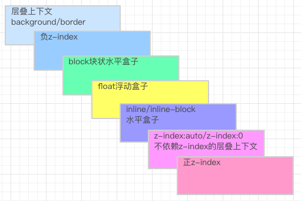
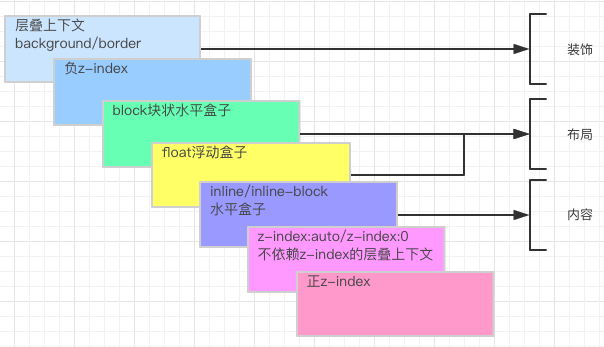
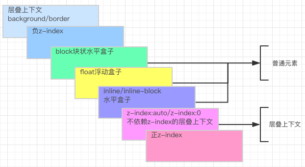
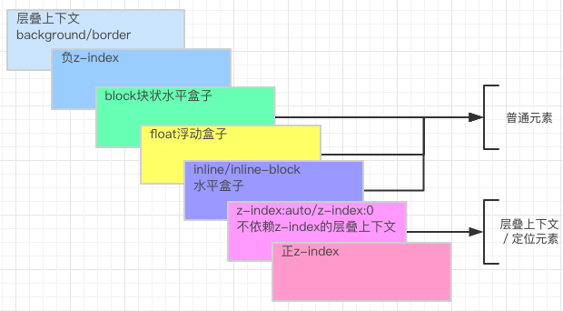

css层叠规则
实例测试
先做几道题，热热身！ 请给出以下5个实例，z轴方向，从上到下，颜色的顺序是怎样的。层叠上下文
概念
层叠上下文是HTML元素的三维概念，这些HTML元素在一条假想的相对于面向（电脑屏幕的）视窗或者网页的用户的z轴上延伸，HTML元素依据其自身属性按照优先级顺序占用层叠上下文的空间。
形成条件
符合以下任何一个条件，便可形成层叠上下文：
- 根元素 (HTML)
- "position"值为"absolute"或"relative"，并且"z-index"值不为"auto"的元素
- "position"值为"fixed"或"sticky"的元素
- 其父元素"display"值为"flex"或"inline-flex",并且其自身"z-index"值不为"auto"的元素
- "opacity"属性值小于1的元素
- "mix-blend-mode"属性值不为"normal"的元素
- 以下属性值不为"none"的元素：
- transform
- filter
- perspective
- clip-path
- mask / mask-image / mask-border
- "isolation"属性值为"isolate"的元素
- "-webkit-overflow-scrolling"属性值为"touch"的元素
- 在"will-change"中指定了任意CSS属性，即便你没有直接指定这些属性的值
z-index
- z-index只对定位元素生效
- 从层叠顺序来说，"z-index"值为"auto"或0，顺序是一样的
- 但是从形成层叠上下文的角度来说，它们又是有区别的（例如：上面提及的，包含"z-index"值不为"auto"的那些条件）
特性
层叠上下文元素有如下特性：
- 层叠上下文的层叠水平要比普通元素高（具体情况后面说明）
- 层叠上下文可以嵌套，内部层叠上下文及其所有子元素均受制于外部的层叠上下文。
- 每个层叠上下文和兄弟元素独立，也就是当进行层叠变化或渲染的时候，只需要考虑后代元素。
- 每个层叠上下文是自成体系的，当元素发生层叠的时候，整个元素被认为是在父层叠上下文的层叠顺序中。
层叠顺序
层叠顺序的讨论，需要基于某个层叠上下文（层叠上下文比作javascript中的闭包，那么层叠顺序就好比闭包中的逻辑）
- 层叠顺序示意图

- 辅助记忆

- 层叠上下文的层叠水平要比普通元素高

所以，普通元素是怎么定义的？图中已做标识，普通元素为图中所示3个区块（绿色、黄色、紫色）
定位元素
- position属性值设置除默认值static以外的元素，包括relative，absolute，fixed
- 元素一旦成为定位元素，其z-index就会自动生效，此时其z-index就是默认的auto，也就是0级别
- 而层叠上下文元素的层叠顺序也是z-index:auto级别
- 所以，定位元素和层叠上下文元素是同等级别的，并且高于普通元素

参考文献
- https://developer.mozilla.org/en-US/docs/Web/CSS/CSSPositioning/Understandingzindex/Thestacking_context
- http://www.zhangxinxu.com/wordpress/2016/01/understand-css-stacking-context-order-z-index/